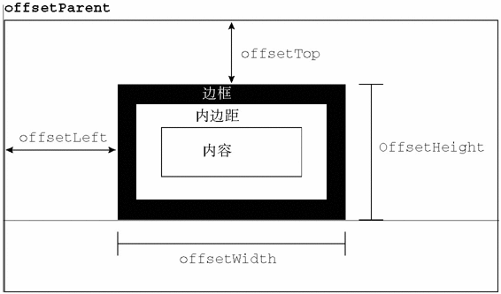
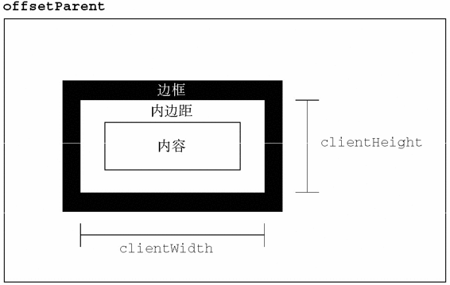
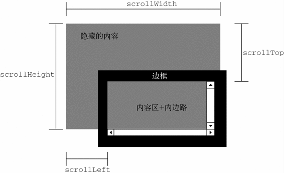

在标准模式下，所有度量值都必须指定一个度量单位。在混杂模式下，可以将
在标准模式下，所有度量值都必须指定一个度量单位。在混杂模式下，可以将style.width设置为"20"，浏览器会假设它是"20px"；但在标准模式下，将style.width设置为"20"会导致被忽略——因为没有度量单位。在实践中，最好始终都指定度量单位。
在HTML中定义样式的方式有3种：通过<link/>元素包含外部样式表文件、使用<style/>元素定义嵌入式样式，以及使用style特性定义针对特定元素的样式。“DOM2级样式”模块围绕这3种应用样式的机制提供了一套API。要确定浏览器是否支持DOM2级定义的CSS能力，可以使用下列代码。
var supportsDOM2CSS = document.implementation.hasFeature("CSS", "2.0");
var supportsDOM2CSS2 = document.implementation.hasFeature("CSS2", "2.0");
任何支持style特性的HTML元素在JavaScript中都有一个对应的style属性。这个style对象是CSSStyleDeclaration的实例，包含着通过HTML的style特性指定的所有样式信息，但不包含与外部样式表或嵌入样式表经层叠而来的样式。在style特性中指定的任何CSS属性都将表现为这个style对象的相应属性。对于使用短划线（分隔不同的词汇，例如background-image）的CSS属性名，必须将其转换成驼峰大小写形式，才能通过JavaScript来访问。下表列出了几个常见的CSS属性及其在style对象中对应的属性名。
| CSS属性 | JavaScript属性 |
|---|---|
background-image |
style.backgroundImage |
color |
style.color |
display |
style.display |
font-family |
style.fontFamily |
多数情况下，都可以通过简单地转换属性名的格式来实现转换。其中一个不能直接转换的CSS属性就是float。由于float是JavaScript中的保留字，因此不能用作属性名。“DOM2级样式”规范规定样式对象上相应的属性名应该是cssFloat；Firefox、Safari、Opera和Chrome都支持这个属性，而IE支持的则是styleFloat。
只要取得一个有效的DOM元素的引用，就可以随时使用JavaScript为其设置样式。以下是几个例子。
var myDiv = document.getElementById("myDiv");
//设置背景颜色
myDiv.style.backgroundColor = "red";
//改变大小
myDiv.style.width = "100px";
myDiv.style.height = "200px";
//指定边框
myDiv.style.border = "1px solid black";
在以这种方式改变样式时，元素的外观会自动被更新。
style.width设置为"20"，浏览器会假设它是"20px"；但在标准模式下，将style.width设置为"20"会导致被忽略——因为没有度量单位。在实践中，最好始终都指定度量单位。
通过style对象同样可以取得在style特性中指定的样式。以下面的HTML代码为例。
<div id="myDiv" style="background-color:blue; width:10px; height:25px"></div>
在style特性中指定的样式信息可以通过下列代码取得。
alert(myDiv.style.backgroundColor); //"blue"
alert(myDiv.style.width); //"10px"
alert(myDiv.style.height); //"25px"
如果没有为元素设置style特性，那么style对象中可能会包含一些默认的值，但这些值并不能准确地反映该元素的样式信息。
1. DOM样式属性和方法
“DOM2级样式”规范还为style对象定义了一些属性和方法。这些属性和方法在提供元素的style特性值的同时，也可以修改样式。下面列出了这些属性和方法。
cssText：如前所述，通过它能够访问到style特性中的CSS代码。
length：应用给元素的CSS属性的数量。
parentRule：表示CSS信息的CSSRule对象。本节后面将讨论CSSRule类型。
getPropertyCSSValue(propertyName)：返回包含给定属性值的CSSValue对象。
getPropertyPriority(propertyName)：如果给定的属性使用了!important设置，则返回"important"；否则，返回空字符串。
getPropertyValue(propertyName)：返回给定属性的字符串值。
item(index)：返回给定位置的CSS属性的名称。
removeProperty(propertyName)：从样式中删除给定属性。
setProperty(propertyName,value,priority)：将给定属性设置为相应的值，并加上优先权标志（"important"或者一个空字符串）。
通过cssText属性可以访问style特性中的CSS代码。在读取模式下，cssText返回浏览器对style特性中CSS代码的内部表示。在写入模式下，赋给cssText的值会重写整个style特性的值；也就是说，以前通过style特性指定的样式信息都将丢失。例如，如果通过style特性为元素设置了边框，然后再以不包含边框的规则重写cssText，那么就会抹去元素上的边框。下面是使用cssText属性的一个例子。
myDiv.style.cssText = "width: 25px; height: 100px; background-color: green";
alert(myDiv.style.cssText);
设置cssText是为元素应用多项变化最快捷的方式，因为可以一次性地应用所有变化。
设计length属性的目的，就是将其与item()方法配套使用，以便迭代在元素中定义的CSS属性。在使用length和item()时，style对象实际上就相当于一个集合，都可以使用方括号语法来代替item()来取得给定位置的CSS属性，如下面的例子所示。
for (var i=0, len=myDiv.style.length; i < len; i++){
alert(myDiv.style[i]); //或者myDiv.style.item(i)
}
无论是使用方括号语法还是使用item()方法，都可以取得CSS属性名（"background-color"，不是"backgroundColor"）。然后，就可以在getPropertyValue()中使用了取得的属性名进一步取得属性的值，如下所示。
var prop, value, i, len;
for (i=0, len=myDiv.style.length; i < len; i++){
prop = myDiv.style[i]; //或者 myDiv.style.item(i)
value = myDiv.style.getPropertyValue(prop);
alert(prop + " : " + value);
}
getPropertyValue()方法取得的始终都是CSS属性值的字符串表示。如果你需要更多信息，可以使用getPropertyCSSValue()方法，它返回一个包含两个属性的CSSValue对象，这两个属性分别是：cssText和cssValueType。其中，cssText属性的值与getPropertyValue()返回的值相同，而cssValueType属性则是一个数值常量，表示值的类型：0表示继承的值，1表示基本的值，2表示值列表，3表示自定义的值。以下代码既输出CSS属性值，也输出值的类型。

var prop, value, i, len;
for (i=0, len=myDiv.style.length; i < len; i++){
prop = myDiv.style[i]; //或者myDiv.style.item(i)
value = myDiv.style.getPropertyCSSValue(prop);
alert(prop + " : " + value.cssText + " (" + value.cssValueType + ")");
}
DOMStyleObjectExample.htm
在实际开发中，getPropertyCSSValue()使用得比getPropertyValue()少得多。IE9+、Safarie 3+以及Chrome支持这个方法。Firefox 7及之前版本也提供这个访问，但调用总返回null。
要从元素的样式中移除某个CSS属性，需要使用removeProperty()方法。使用这个方法移除一个属性，意味着将会为该属性应用默认的样式（从其他样式表经层叠而来）。例如，要移除通过style特性设置的border属性，可以使用下面的代码。
myDiv.style.removeProperty("border");
在不确定某个给定的CSS属性拥有什么默认值的情况下，就可以使用这个方法。只要移除相应的属性，就可以为元素应用默认值。
2. 计算的样式
虽然style对象能够提供支持style特性的任何元素的样式信息，但它不包含那些从其他样式表层叠而来并影响到当前元素的样式信息。“DOM2级样式”增强了document.defaultView，提供了getComputedStyle()方法。这个方法接受两个参数：要取得计算样式的元素和一个伪元素字符串（例如":after"）。如果不需要伪元素信息，第二个参数可以是null。getComputedStyle()方法返回一个CSSStyleDeclaration对象（与style属性的类型相同），其中包含当前元素的所有计算的样式。以下面这个HTML页面为例。
<!DOCTYPE html>
<html>
<head>
<title>Computed Styles Example</title>
<style type="text/css">
#myDiv {
background-color: blue;
width: 100px;
height: 200px;
}
</style>
</head>
<body>
<div id="myDiv" style="background-color: red; border: 1px solid black"></div>
</body>
</html>
ComputedStylesExample.htm
应用给这个例子中<div>元素的样式一方面来自嵌入式样式表（<style>元素中的样式），另一方面来自其style特性。但是，style特性中设置了backgroundColor和border，没有设置width和height，后者是通过样式表规则应用的。以下代码可以取得这个元素计算后的样式。
var myDiv = document.getElementById("myDiv");
var computedStyle = document.defaultView.getComputedStyle(myDiv, null);
alert(computedStyle.backgroundColor); // "red"
alert(computedStyle.width); // "100px"
alert(computedStyle.height); // "200px"
alert(computedStyle.border); // 在某些浏览器中是"1px solid black"
ComputedStylesExample.htm
在这个元素计算后的样式中，背景颜色的值是"red"，宽度值是"100px"，高度值是"200px"。我们注意到，背景颜色不是"blue"，因为这个样式在自身的style特性中已经被覆盖了。边框属性可能会也可能不会返回样式表中实际的border规则（Opera会返回，但其他浏览器不会）。存在这个差别的原因是不同浏览器解释综合（rollup）属性（如border）的方式不同，因为设置这种属性实际上会涉及很多其他属性。在设置border时，实际上是设置了四个边的边框宽度、颜色、样式属性（border-left-width、border-top-color、border-bottom-style，等等）。因此，即使computedStyle.border不会在所有浏览器中都返回值，但computedStyle.borderLeftWidth则会返回值。
rgb(255,0,0)）。因此，在使用getComputedStyle()方法时，最好多在几种浏览器中测试一下。
IE不支持getComputedStyle()方法，但它有一种类似的概念。在IE中，每个具有style属性的元素还有一个currentStyle属性。这个属性是CSSStyleDeclaration的实例，包含当前元素全部计算后的样式。取得这些样式的方式也差不多，如下面的例子所示。
var myDiv = document.getElementById("myDiv");
var computedStyle = myDiv.currentStyle;
alert(computedStyle.backgroundColor); //"red"
alert(computedStyle.width); //"100px"
alert(computedStyle.height); //"200px"
alert(computedStyle.border); //undefined
IEComputedStylesExample.htm
与DOM版本的方式一样，IE也没有返回border样式，因为这是一个综合属性。
无论在哪个浏览器中，最重要的一条是要记住所有计算的样式都是只读的；不能修改计算后样式对象中的CSS属性。此外，计算后的样式也包含属于浏览器内部样式表的样式信息，因此任何具有默认值的CSS属性都会表现在计算后的样式中。例如，所有浏览器中的visibility属性都有一个默认值，但这个值会因实现而异。在默认情况下，有的浏览器将visibility属性设置为"visible"，而有的浏览器则将其设置为"inherit"。换句话说，不能指望某个CSS属性的默认值在不同浏览器中是相同的。如果你需要元素具有某个特定的默认值，应该手工在样式表中指定该值。
CSSStyleSheet类型表示的是样式表，包括通过<link>元素包含的样式表和在<style>元素中定义的样式表。有读者可能记得，这两个元素本身分别是由HTMLLinkElement和HTMLStyleElement类型表示的。但是，CSSStyleSheet类型相对更加通用一些，它只表示样式表，而不管这些样式表在HTML中是如何定义的。此外，上述两个针对元素的类型允许修改HTML特性，但CSSStyleSheet对象则是一套只读的接口（有一个属性例外）。使用下面的代码可以确定浏览器是否支持DOM2级样式表。
var supportsDOM2StyleSheets =
document.implementation.hasFeature("StyleSheets", "2.0");
CSSStyleSheet继承自StyleSheet，后者可以作为一个基础接口来定义非CSS样式表。从StyleSheet接口继承而来的属性如下。
disabled：表示样式表是否被禁用的布尔值。这个属性是可读/写的，将这个值设置为true可以禁用样式表。
href：如果样式表是通过<link>包含的，则是样式表的URL；否则，是null。
media：当前样式表支持的所有媒体类型的集合。与所有DOM集合一样，这个集合也有一个length属性和一个item()方法。也可以使用方括号语法取得集合中特定的项。如果集合是空列表，表示样式表适用于所有媒体。在IE中，media是一个反映<link>和<style>元素media特性值的字符串。
ownerNode：指向拥有当前样式表的节点的指针，样式表可能是在HTML中通过<link>或<style/>引入的（在XML中可能是通过处理指令引入的）。如果当前样式表是其他样式表通过@import导入的，则这个属性值为null。IE不支持这个属性。
parentStyleSheet：在当前样式表是通过@import导入的情况下，这个属性是一个指向导入它的样式表的指针。
title：ownerNode中title属性的值。
type：表示样式表类型的字符串。对CSS样式表而言，这个字符串是"type/css"。
除了disabled属性之外，其他属性都是只读的。在支持以上所有这些属性的基础上，CSSStyleSheet类型还支持下列属性和方法：
cssRules：样式表中包含的样式规则的集合。IE不支持这个属性，但有一个类似的rules属性。ownerRule：如果样式表是通过@import导入的，这个属性就是一个指针，指向表示导入的规则；否则，值为null。IE不支持这个属性。
deleteRule(index)：删除cssRules集合中指定位置的规则。IE不支持这个方法，但支持一个类似的removeRule()方法。
* insertRule(rule,index)：向cssRules集合中指定的位置插入rule字符串。IE不支持这个方法，但支持一个类似的addRule()方法。
应用于文档的所有样式表是通过document.styleSheets集合来表示的。通过这个集合的length属性可以获知文档中样式表的数量，而通过方括号语法或item()方法可以访问每一个样式表。来看一个例子。
var sheet = null;
for (var i=0, len=document.styleSheets.length; i < len; i++){
sheet = document.styleSheets[i];
alert(sheet.href);
}
StyleSheetsExample.htm
以上代码可以输出文档中使用的每一个样式表的href属性（<style>元素包含的样式表没有href属性）。
不同浏览器的document.styleSheets返回的样式表也不同。所有浏览器都会包含<style>元素和rel特性被设置为"stylesheet"的元素引入的样式表。IE和Opera也包含rel特性被设置为"alternate stylesheet"的<link>元素引入的样式表。
也可以直接通过<link>或<style>元素取得CSSStyleSheet对象。DOM规定了一个包含CSSStyleSheet对象的属性，名叫sheet；除了IE，其他浏览器都支持这个属性。IE支持的是styleSheet属性。要想在不同浏览器中都能取得样式表对象，可以使用下列代码。
function getStyleSheet(element){
return element.sheet || element.styleSheet;
}
//取得第一个<link/>元素引入的样式表
var link = document.getElementsByTagName("link")[0];
var sheet = getStyleSheet(link);
StyleSheetsExample2.htm
这里的getStylesheet()返回的样式表对象与document.styleSheets集合中的样式表对象相同。
1. CSS规则
CSSRule对象表示样式表中的每一条规则。实际上，CSSRule是一个供其他多种类型继承的基类型，其中最常见的就是CSSStyleRule类型，表示样式信息（其他规则还有@import、@font-face、@page和@charset，但这些规则很少有必要通过脚本来访问）。CSSStyleRule对象包含下列属性。
cssText：返回整条规则对应的文本。由于浏览器对样式表的内部处理方式不同，返回的文本可能会与样式表中实际的文本不一样；Safari始终都会将文本转换成全部小写。IE不支持这个属性。
parentRule：如果当前规则是导入的规则，这个属性引用的就是导入规则；否则，这个值为null。IE不支持这个属性。
parentStyleSheet：当前规则所属的样式表。IE不支持这个属性。
selectorText：返回当前规则的选择符文本。由于浏览器对样式表的内部处理方式不同，返回的文本可能会与样式表中实际的文本不一样（例如，Safari 3之前的版本始终会将文本转换成全部小写）。在Firefox、Safari、Chrome和IE中这个属性是只读的。Opera允许修改selectorText。
style：一个CSSStyleDeclaration对象，可以通过它设置和取得规则中特定的样式值。
type：表示规则类型的常量值。对于样式规则，这个值是1。IE不支持这个属性。
其中三个最常用的属性是cssText、selectorText和style。cssText属性与style.cssText属性类似，但并不相同。前者包含选择符文本和围绕样式信息的花括号，后者只包含样式信息（类似于元素的style.cssText）。此外，cssText是只读的，而style.cssText也可以被重写。
大多数情况下，仅使用style属性就可以满足所有操作样式规则的需求了。这个对象就像每个元素上的style属性一样，可以通过它读取和修改规则中的样式信息。以下面的CSS规则为例。
div.box {
background-color: blue;
width: 100px;
height: 200px;
}
CSSRulesExample.htm
假设这条规则位于页面中的第一个样式表中，而且这个样式表中只有这一条样式规则，那么通过下列代码可以取得这条规则的各种信息。
var sheet = document.styleSheets[0];
var rules = sheet.cssRules || sheet.rules; //取得规则列表
var rule = rules[0]; //取得第一条规则
alert(rule.selectorText); //"div.box"
alert(rule.style.cssText); //完整的CSS代码
alert(rule.style.backgroundColor); //"blue"
alert(rule.style.width); //"100px"
alert(rule.style.height); //"200px"
CSSRulesExample.htm
使用这种方式，可以像确定元素的行内样式信息一样，确定与规则相关的样式信息。与使用元素的方式一样，在这种方式下也可以修改样式信息，如下面的例子所示。
var sheet = document.styleSheets[0]; var rules = sheet.cssRules || sheet.rules; //取得规则列表 var rule = rules[0]; //取得第一条规则 rule.style.backgroundColor = "red"
CSSRulesExample.htm
必须要注意的是，以这种方式修改规则会影响页面中适用于该规则的所有元素。换句话说，如果有两个带有box类的<div>元素，那么这两个元素都会应用修改后的样式。
2. 创建规则
DOM规定，要向现有样式表中添加新规则，需要使用insertRule()方法。这个方法接受两个参数：规则文本和表示在哪里插入规则的索引。下面是一个例子。
sheet.insertRule("body { background-color: silver }", 0); //DOM方法
这个例子插入的规则会改变元素的背景颜色。插入的规则将成为样式表中的第一条规则（插入到了位置0）——规则的次序在确定层叠之后应用到文档的规则时至关重要。Firefox、Safari、Opera和Chrome都支持insertRule()方法。
IE8及更早版本支持一个类似的方法，名叫addRule()，也接收两必选参数：选择符文本和CSS样式信息；一个可选参数：插入规则的位置。在IE中插入与前面例子相同的规则，可使用如下代码。
sheet.addRule("body", "background-color: silver", 0); //仅对IE有效
有关这个方法的规定中说，最多可以使用addRule()添加4 095条样式规则。超出这个上限的调用将会导致错误。
要以跨浏览器的方式向样式表中插入规则，可以使用下面的函数。这个函数接受4个参数：要向其中添加规则的样式表以及与addRule()相同的3个参数，如下所示。
function insertRule(sheet, selectorText, cssText, position){
if (sheet.insertRule){
sheet.insertRule(selectorText + "{" + cssText + "}", position);
} else if (sheet.addRule){
sheet.addRule(selectorText, cssText, position);
}
}
CSSRulesExample2.htm
下面是调用这个函数的示例代码。
insertRule(document.styleSheets[0], "body", "background-color: silver", 0);
虽然可以像这样来添加规则，但随着要添加规则的增多，这种方法就会变得非常繁琐。因此，如果要添加的规则非常多，我们建议还是采用第10章介绍过的动态加载样式表的技术。
3. 删除规则
从样式表中删除规则的方法是deleteRule()，这个方法接受一个参数：要删除的规则的位置。例如，要删除样式表中的第一条规则，可以使用以下代码。
sheet.deleteRule(0); //DOM方法
IE支持的类似方法叫removeRule()，使用方法相同，如下所示：
sheet.removeRule(0); //仅对IE有效
下面是一个能够跨浏览器删除规则的函数。第一个参数是要操作的样式表，第二个参数是要删除的规则的索引。
function deleteRule(sheet, index){
if (sheet.deleteRule){
sheet.deleteRule(index);
} else if (sheet.removeRule){
sheet.removeRule(index);
}
}
CSSRulesExample2.htm/I>
调用这个函数的方式如下。
deleteRule(document.styleSheets[0], 0);
与添加规则相似，删除规则也不是实际Web开发中常见的做法。考虑到删除规则可能会影响CSS层叠的效果，因此请大家慎重使用。
本节介绍的属性和方法并不属于“DOM2级样式”规范，但却与HTML元素的样式息息相关。DOM中没有规定如何确定页面中元素的大小。IE为此率先引入了一些属性，以便开发人员使用。目前，所有主要的浏览器都已经支持这些属性。
1. 偏移量
首先要介绍的属性涉及偏移量（offset dimension），包括元素在屏幕上占用的所有可见的空间。元素的可见大小由其高度、宽度决定，包括所有内边距、滚动条和边框大小（注意，不包括外边距）。通过下列4个属性可以取得元素的偏移量。
offsetHeight：元素在垂直方向上占用的空间大小，以像素计。包括元素的高度、（可见的）水平滚动条的高度、上边框高度和下边框高度。
offsetWidth：元素在水平方向上占用的空间大小，以像素计。包括元素的宽度、（可见的）垂直滚动条的宽度、左边框宽度和右边框宽度。
offsetLeft：元素的左外边框至包含元素的左内边框之间的像素距离。
offsetTop：元素的上外边框至包含元素的上内边框之间的像素距离。
其中，offsetLeft和offsetTop属性与包含元素有关，包含元素的引用保存在offsetParent属性中。offsetParent属性不一定与parentNode的值相等。例如，<td>元素的offsetParent是作为其祖先元素的<table>元素，因为<table>是在DOM层次中距<td>最近的一个具有大小的元素。图12-1形象地展示了上面几个属性表示的不同大小。

图 12-1
要想知道某个元素在页面上的偏移量，将这个元素的offsetLeft和offsetTop与其offsetParent的相同属性相加，如此循环直至根元素，就可以得到一个基本准确的值。以下两个函数就可以用于分别取得元素的左和上偏移量。
function getElementLeft(element){
var actualLeft = element.offsetLeft;
var current = element.offsetParent;
while (current !== null){
actualLeft += current.offsetLeft;
current = current.offsetParent;
}
return actualLeft;
}
function getElementTop(element){
var actualTop = element.offsetTop;
var current = element.offsetParent;
while (current !== null){
actualTop += current. offsetTop;
current = current.offsetParent;
}
return actualTop;
}
OffsetDimensionsExample.htm
这两个函数利用offsetParent属性在DOM层次中逐级向上回溯，将每个层次中的偏移量属性合计到一块。对于简单的CSS布局的页面，这两函数可以得到非常精确的结果。对于使用表格和内嵌框架布局的页面，由于不同浏览器实现这些元素的方式不同，因此得到的值就不太精确了。一般来说，页面中的所有元素都会被包含在几个<div>元素中，而这些<div>元素的offsetParent又是<body>元素，所以getElementLeft()与getElementTop()会返回与offsetLeft和offsetTop相同的值。
2. 客户区大小
元素的客户区大小（client dimension），指的是元素内容及其内边距所占据的空间大小。有关客户区大小的属性有两个：clientWidth和clientHeight。其中，clientWidth属性是元素内容区宽度加上左右内边距宽度；clientHeight属性是元素内容区高度加上上下内边距高度。图12-2形象地说明了这些属性表示的大小。

图 12-2
从字面上看，客户区大小就是元素内部的空间大小，因此滚动条占用的空间不计算在内。最常用到这些属性的情况，就是像第8章讨论的确定浏览器视口大小的时候。如下面的例子所示，要确定浏览器视口大小，可以使用document.documentElement或document.body（在IE7之前的版本中）的clientWidth和clientHeight。
function getViewport(){
if (document.compatMode == "BackCompat"){
return {
width: document.body.clientWidth,
height: document.body.clientHeight
};
} else {
return {
width: document.documentElement.clientWidth,
height: document.documentElement.clientHeight
};
}
}
这个函数首先检查document.compatMode属性，以确定浏览器是否运行在混杂模式。Safari 3.1之前的版本不支持这个属性，因此就会自动执行else语句。Chrome、Opera和Firefox大多数情况下都运行在标准模式下，因此它们也会前进到else语句。这个函数会返回一个对象，包含两个属性：width和height；表示浏览器视口（<html>或<body>元素）的大小。
3. 滚动大小
最后要介绍的是滚动大小（scroll dimension），指的是包含滚动内容的元素的大小。有些元素（例如<html>元素），即使没有执行任何代码也能自动地添加滚动条；但另外一些元素，则需要通过CSS的overflow属性进行设置才能滚动。以下是4个与滚动大小相关的属性。
scrollHeight：在没有滚动条的情况下，元素内容的总高度。
scrollWidth：在没有滚动条的情况下，元素内容的总宽度。
scrollLeft：被隐藏在内容区域左侧的像素数。通过设置这个属性可以改变元素的滚动位置。
scrollTop：被隐藏在内容区域上方的像素数。通过设置这个属性可以改变元素的滚动位置。
图12-3展示了这些属性代表的大小。
scrollWidth和scrollHeight主要用于确定元素内容的实际大小。例如，通常认为<html>元素是在Web浏览器的视口中滚动的元素（IE6之前版本运行在混杂模式下时是<body>元素）。因此，带有垂直滚动条的页面总高度就是document.documentElement.scrollHeight。
对于不包含滚动条的页面而言，scrollWidth和scrollHeight与clientWidth和clientHeight之间的关系并不十分清晰。在这种情况下，基于document.documentElement查看这些属性会在不同浏览器间发现一些不一致性问题，如下所述。
Firefox中这两组属性始终都是相等的，但大小代表的是文档内容区域的实际尺寸，而非视口的尺寸。
Opera、Safari 3.1及更高版本、Chrome中的这两组属性是有差别的，其中scrollWidth和scrollHeight等于视口大小，而clientWidth和clientHeight等于文档内容区域的大小。
IE（在标准模式）中的这两组属性不相等，其中scrollWidth和scrollHeight等于文档内容区域的大小，而clientWidth和clientHeight等于视口大小。

图 12-3
在确定文档的总高度时（包括基于视口的最小高度时），必须取得scrollWidth/clientWidth和scrollHeight/clientHeight中的最大值，才能保证在跨浏览器的环境下得到精确的结果。下面就是这样一个例子。
var docHeight = Math.max(document.documentElement.scrollHeight,
document.documentElement.clientHeight);
var docWidth = Math.max(document.documentElement.scrollWidth,
document.documentElement.clientWidth);
注意，对于运行在混杂模式下的IE，则需要用document.body代替document.documentElement。
通过scrollLeft和scrollTop属性既可以确定元素当前滚动的状态，也可以设置元素的滚动位置。在元素尚未被滚动时，这两个属性的值都等于0。如果元素被垂直滚动了，那么scrollTop的值会大于0，且表示元素上方不可见内容的像素高度。如果元素被水平滚动了，那么scrollLeft的值会大于0，且表示元素左侧不可见内容的像素宽度。这两个属性都是可以设置的，因此将元素的scrollLeft和scrollTop设置为0，就可以重置元素的滚动位置。下面这个函数会检测元素是否位于顶部，如果不是就将其回滚到顶部。
function scrollToTop(element){
if (element.scrollTop != 0){
element.scrollTop = 0;
}
}
这个函数既取得了scrollTop的值，也设置了它的值。
4. 确定元素大小
IE、Firefox 3+、Safari 4+、Opera 9.5及Chrome为每个元素都提供了一个getBoundingClientRect()方法。这个方法返回会一个矩形对象，包含4个属性：left、top、right和bottom。这些属性给出了元素在页面中相对于视口的位置。但是，浏览器的实现稍有不同。IE8及更早版本认为文档的左上角坐标是(2, 2)，而其他浏览器包括IE9则将传统的(0,0)作为起点坐标。因此，就需要在一开始检查一下位于(0,0)处的元素的位置，在IE8及更早版本中，会返回(2,2)，而在其他浏览器中会返回(0,0)。来看下面的函数：
function getBoundingClientRect(element){
if (typeof arguments.callee.offset != "number"){
var scrollTop = document.documentElement.scrollTop;
var temp = document.createElement("div");
temp.style.cssText = "position:absolute;left:0;top:0;";
document.body.appendChild(temp);
arguments.callee.offset = -temp.getBoundingClientRect().top - scrollTop;
document.body.removeChild(temp);
temp = null;
}
var rect = element.getBoundingClientRect();
var offset = arguments.callee.offset;
return {
left: rect.left + offset,
right: rect.right + offset,
top: rect.top + offset,
bottom: rect.bottom + offset
};
}
GetBoundingClientRectExample.htm
这个函数使用了它自身的属性来确定是否要对坐标进行调整。第一步是检测属性是否有定义，如果没有就定义一个。最终的offset会被设置为新元素上坐标的负值，实际上就是在IE中设置为?2，在Firefox和Opera中设置为-0。为此，需要创建一个临时的元素，将其位置设置在(0,0)，然后再调用其getBoundingClientRect()。而之所以要减去视口的scrollTop，是为了防止调用这个函数时窗口被滚动了。这样编写代码，就无需每次调用这个函数都执行两次getBoundingClientRect()了。接下来，再在传入的元素上调用这个方法并基于新的计算公式创建一个对象。
对于不支持getBoundingClientRect()的浏览器，可以通过其他手段取得相同的信息。一般来说，right和left的差值与offsetWidth的值相等，而bottom和top的差值与offsetHeight相等。而且，left和top属性大致等于使用本章前面定义的getElementLeft()和getElementTop()函数取得的值。综合上述，就可以创建出下面这个跨浏览器的函数：
function getBoundingClientRect(element){
var scrollTop = document.documentElement.scrollTop;
var scrollLeft = document.documentElement.scrollLeft;
if (element.getBoundingClientRect){
if (typeof arguments.callee.offset != "number"){
var temp = document.createElement("div");
temp.style.cssText = "position:absolute;left:0;top:0;";
document.body.appendChild(temp);
arguments.callee.offset = -temp.getBoundingClientRect().top - scrollTop;
document.body.removeChild(temp);
temp = null;
}
var rect = element.getBoundingClientRect();
var offset = arguments.callee.offset;
return {
left: rect.left + offset,
right: rect.right + offset,
top: rect.top + offset,
bottom: rect.bottom + offset
};
} else {
var actualLeft = getElementLeft(element);
var actualTop = getElementTop(element);
return {
left: actualLeft - scrollLeft,
right: actualLeft + element.offsetWidth - scrollLeft,
top: actualTop - scrollTop,
bottom: actualTop + element.offsetHeight - scrollTop
}
}
}
GetBoundingClientRectExample.htm
这个函数在getBoundingClientRect()有效时，就使用这个原生方法，而在这个方法无效时则使用默认的计算公式。在某些情况下，这个函数返回的值可能会有所不同，例如使用表格布局或使用滚动元素的情况下。
arguments.callee，所以这个方法不能在严格模式下使用。